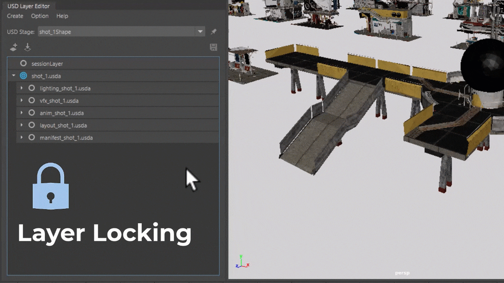

USD for Maya v0.28.0 Release Notes
Release Highlights
Layer locking
This update introduces layer locking. You can now work confidently without concern of editing in the wrong layers.
- You can lock or unlock one or more layers with the lock icon in the USD layer editor.
- This lock state is saved as part of the Maya data, ensuring its persistence even after reopening the project.
- Administrators can enforce system-level locks on layers, preventing standard users from unlocking them. This can be done via Mel or Python scripts, or by locking the USD file on disk. The system-locked layers are easily identifiable by the disabled lock icons. Note that system locks are not saved as part of the Maya data.

Other Improvements
- Added the ability for setting the type of the root prim to either Scope or Xform in the USD Exporter.
- Added several callbacks related to loading stages and layers to provide mechanisms for TDs to run layer locking logic.
- Added the ability for choosing multiple job contexts from the Plug-in configuration section in the USD Exporter.
- Added ability for plugins to include their own UI to be supplied to a job context and exposed alongside the context in the Plug-in configuration.
- Added new command to query version information of the Maya USD plugin.
- Exposed missing export options to Export Chasers.
- General stability and performance improvements.
What's Fixed
| Build |
| [GitHub #3684] Update for USD v24.03 |
| [GitHub #3673] Fixup UFE_PREVIEW_NUM to use better Ufe cmake checks |
| [GitHub #3670] Update testMayaUsdInfoCommand.py |
| [GitHub #3667] Stage loading problems using MEL proc |
| [GitHub #3628] Use the Using Directive macro |
| [GitHub #3608] Minimal API needed by LookdevX to decouple from mayaUsd |
| [GitHub #3606] Link against mayaUsdAPI to preload it for other plugins |
| [GitHub #3602] Maya is no longer using a Preview Release number |
| [GitHub #3581] Enable "Implicit Namespace Packages" feature |
| Translation Framework |
| [GitHub #3581] Enable "Implicit Namespace Packages" feature |
| [GitHub #3681] Support exporting a joint hierarchy inside a node tree to the root level |
| [GitHub #3601] Fix the issue caused duplicate as USD failed |
| [GitHub #3592] Call CanExport() per object instead of per export |
| Workflow |
| [GitHub #3592] Call CanExport() per object instead of per export |
| [GitHub #3712] Allow deleting prims carrying a loaded payload |
| [GitHub #3709] When opening a file dependency in the AE, the dialog doesn't open to that path |
| [GitHub #3709] When opening a file dependency in the AE, the dialog doesn't open to that path |
| [GitHub #3683] Implement Ufe::Camera::renderable() for Maya Master (2026) |
| [GitHub #3680] Clear the selected stage layer database attribute when no stage selected |
| [GitHub #3679] Remove lingering invalid prims after adding prim under prim that is deactivated |
| [GitHub #3665] Targets the session layer when no other layers are modifiable |
| [GitHub #3648] Add support for getting native type via metadata |
| [GitHub #3640] Restrict UFE nodes according to proxyNode's primPath |
| [GitHub #3615] Better universal manipulator undo redo |
| [GitHub #3609] Keep Maya Ref valid after saving |
| [GitHub #3593] Fix the crash when editing as Maya an instanced object and then undoing the edit-as-Maya |
| Render |
| [GitHub #3702] Fix crash due to invalid shader |
| [GitHub #3663] Fix reading past the end of the buffer causing incorrect rendering and crash later on |
| [GitHub #3656] Add support for doubleSided attribute on USD prims in VP2 delegate |
| [GitHub #3652] Remember unknown color spaces |
| [GitHub #3607] Fix performance of instanceable prims |
| [GitHub #3586] Allowing meshes with insufficient primvars data size |
| Miscellaneous |
| [GitHub #3715] Layer editor icon scaling |
| [GitHub #3697] Fix the crash when attempting to save a USD file from USD Layer Editor |
| [GitHub #3696] Author references but do not have the UsdStage compose |
| [GitHub #3693] Fix image file attribute detection |
| [GitHub #3691] Dope Sheet : Error when right-click on channel set if USD plugin installed |
| [GitHub #3678] Fix conflict in shaders with MaterialX 1.38.9 |
| [GitHub #3668] Fix mistake in command name |
| [GitHub #3653] Allow Raw colorspace aliases in file texture validation |